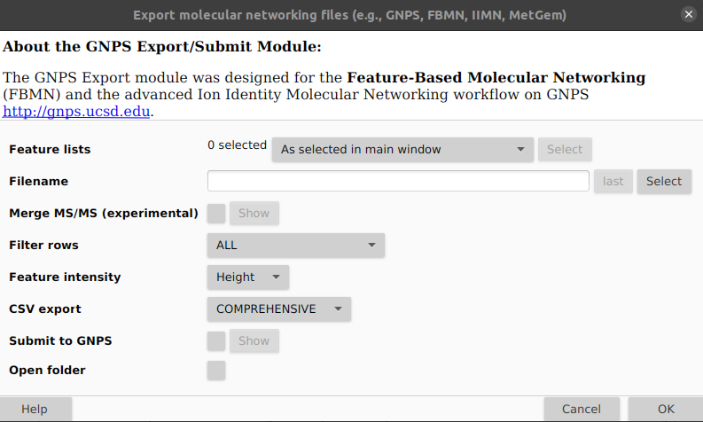

Input/Output
FERMO accepts several input data formats and produces a variety of output data files, as described below.
Input Data Formats
This is a comprehensive list of input data formats currently accepted by FERMO. Detailed information can be found below. If your favorite data format is missing, feel free to contact the developers.
| Data type | Accepted formats | Mandatory/Optional | Example |
| Molecular feature peaktable | mzmine3 | Mandatory | mzmine3 |
| MS/MS spectrum information | mgf(mzmine3) | Optional | mgf(mzmine3) |
| Group metadata | fermo | Optional | fermo |
| Phenotype/bioactivity data | qualitative, quantitative-percentage, quantitative-concentration |
Optional | qualitative, quantitative-percentage, quantitative-concentration |
| Spectral library | mgf(GNPS) | Optional | mgf(GNPS) |
| MS2Query results file | ms2query(fermo-modified) | Optional | ms2query(fermo-modified) |
| AntiSMASH results | antiSMASH(KnownClusterBlast) | Optional | antiSMASH(KnownClusterBlast) |
Output Data Formats
All output files created by FERMO are written into a results directory that is created in the directory in which the provided peaktable file resides.
All output files are starting with out.fermo and ending with a suffix that specifies their type (see the table below):
| Suffix | Description |
| .session.json | Main output of fermo_core, is used for visualization in fermo_gui |
| .graphml | Spectral similarity (=molecular) network file, can be imported into Cytoscape |
| .fermo.abbrev.csv | Feature annotation file, can be imported into Cytoscape |
| .fermo.full.csv | Modified full peaktable, can be used in downstream processing |
| .log | A log file describing the steps performed and any warnings/errors that were registered. |
| .summary.txt | A summary of the steps taken and parameters applied in human-readable form. Can be adapted for the methods section of a manuscript (beware of copy-pasting and a potential flag by a plagiarism software) |
Details Input Data Formats
Molecular feature peaktable
The peaktable must:
- Derive from liquid chromatography electrospray ionization (tandem) mass spectrometry (LC-ESI-(MS/)MS)
- Constitute of samples acquired at identical concentration/dilution and identical injection volume
- Be acquired using untargeted data-dependent acquisition (DDA)
- Be of high resolution (ideally, <20 ppm mass deviation)
- Be in a single polarity (either positive or negative ion mode)
mzmine3
Peaktable produced by created by MZmine (version 3.x). To generate the peaktable in MZmine3, perform the usual pre-processing steps and export the table using Feature list methods -> Export feature list -> Molecular networking files. In the resulting window (see below), keep defaults except Filter rows: ALL, Feature intensity: Height, and CSV export: COMPREHENSIVE.

For an example, see here.
MSMS spectrum information
mgf(mzmine3)
The MS/MS (MS2) fragmentation data file is automatically generated during MZmine (version 3.x) peaktable export (see above).
BEGIN IONS
FEATURE_ID=13
PEPMASS=610.3346
SCANS=13
RTINSECONDS=572.766
CHARGE=0+
MSLEVEL=2
98.8724 4.9E1
103.7477 2.9E1
... ...
END IONS
Group Metadata
fermo
.csv-file (see example below). Specifically, the file must have:
- A single column labeled
sample_namespecifying the samples IDs. Entries in this column must be unique. - One or more columns specifying group categories. In these columns, all values must be strings (no numbers).
Optionally, the file may have:
- One or more samples designated as sample blanks with the signal word
BLANK.
sample_name,phylogroup,medium
sample1.mzXML,group1,mediumA
sample2.mzXML,group1,mediumB
sample3.mzXML,group2,mediumA
sample4.mzXML,group2,mediumB
sample1.mzXML,BLANK,BLANK
sampleN.mzXML,groupX,mediumY
Phenotype (bioactivity) data
qualitative
.csv-file (see example below). Specifically, the file must have:
- A single column labeled
sample_namespecifying the samples considered positive
quantitative-percentage
.csv-file (see example below). Specifically, the file must have:
- A column labeled
sample_namespecifying the sample identifiers - A column labeled
wellspecifying the well number. Numbers in this column must be occurring only once. Note that the labelwellstands for any measurement reference (vial, rack position, etc.) - One to six columns labeled with
assay:..., which indicate different assays (or one assay at different concentrations). The values indicate the percentage inhibition measured for this sample. Negative percentages are considered as 0 (zero). - Measurements for at least 10 samples
sample_name,well,assay:assay1_conc1,assay:assay1_conc2,assay2_conc1
sample1.mzXML,1,6,30,98
sample1.mzXML,2,-5,22,80
sample2.mzXML,3,3,15,-20
sample2.mzXML,4,18,17,32
sampleN.mzXML,M,X,Y,Z
quantitative-concentration
.csv-file (see example below). Specifically, the file must have:
- A column labeled
sample_namespecifying the sample identifiers - A column labeled
wellspecifying the well number. Numbers in this column must be occurring only once. Note that the labelwellstands for any measurement reference (vial, rack position, etc.) - One to six columns labeled with
assay:..., which indicate different assays. The values indicate the minimal inhibitory concentration and must be positive numbers. Samples with no measured activity are indicated with 0 (zero). - Measurements for at least 10 samples
sample_name,well,assay:bactericidal
sample1.mzXML,1,256
sample1.mzXML,2,256
sample1.mzXML,3,64
sample1.mzXML,4,32
sample1.mzXML,5,0
sample1.mzXML,6,0
sampleN.mzXML,M,X
Spectral Library
mgf(GNPS)
A .mgf-file (Mascot generic format) as produced by GNPS. Specifically, this file must:
- Start with
BEGIN IONS - Have a
PEPMASSentry indicating the precursor ion m/z (must not be 0.0 or 1.0) - Have a number of fragment-intensity pairs
- End with
END IONS
Optionally, the following fields are supported:
- SMILES
- INCHI
- NAME
Other fields may be present but are not actively parsed.
BEGIN IONS
PEPMASS=1649.45
NAME=Fakeomycin
SMILES=CCCCCC
INCHI=AKFVOKPQHFBYCA
SCANS=1
172.073334 80.0
190.080322 201.0
... ...
END IONS
MS2Query Results File
ms2query(fermo-modified)
A .csv-file (MSQuery version 1.4.0). Specifically, it must have:
- A column labeled
idwith numbers matching molecular feature IDs (not found in standard MS2Query results files - A column labeled
analog_compound_name - A column labeled
ms2query_model_prediction - A column labeled
precursor_mz_difference - A column labeled
precursor_mz_analog - A column labeled
smiles - A column labeled
inchikey - A column labeled
npc_class_results
ms2query_model_prediction,precursor_mz_difference,precursor_mz_query_spectrum,precursor_mz_analog,inchikey,analog_compound_name,smiles,id,npc_class_results
0.3459,47.0324,247.1276,294.1600,AAAAAAAAAA,fakeomycin,CCCCC,3,Carboline alkaloids
AntiSMASH Results
Online (fermo_gui)
In the online version, FERMO requires only an existing antiSMASH job ID, which it will use to automatically fetch the required data.
An antiSMASH job ID has the format taxon-aaaaaaaa-bbbb-cccc-dddd-eeeeeeeeee.
The ID can be found in the antiSMASH notification email or in the URL when browsing the job results.
Offline CLI (fermo_core)
The fermo_core CLI requires a single antiSMASH results directory (at the time of writing, version 7.1) containing a knownclusterblast results directory.